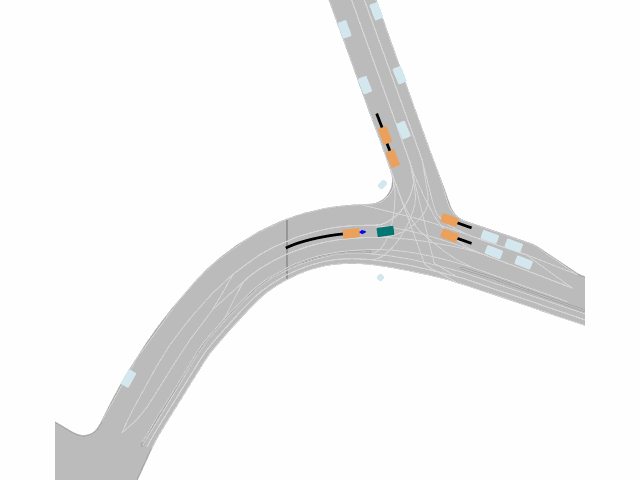
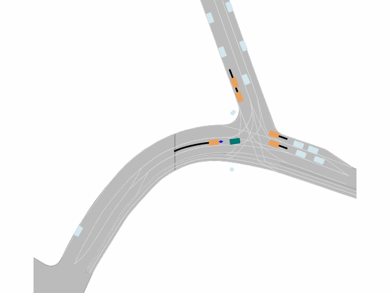

TrafficGamer: Reliable and Flexible Traffic Simulation for Safety-Critical Scenarios with Game-Theoretic Oracles
Abstract
While modern Autonomous Vehicle (AV) systems can develop reliable driving policies under regular traffic conditions, they frequently struggle with safety-critical traffic scenarios. This difficulty primarily arises from the rarity of such scenarios in driving datasets and the complexities associated with predictive modeling among multiple vehicles. To support the testing and refinement of AV policies, simulating safety-critical traffic events is an essential challenge to be addressed. In this work, we introduce TrafficGamer, which facilitates game-theoretic traffic simulation by viewing common road driving as a multi-agent game. In evaluating the empirical performance across various real-world datasets, TrafficGamer ensures both \textit{fidelity} and \textit{exploitability} of the simulated scenarios, guaranteeing that they not only statically align with real-world traffic distribution but also efficiently capture equilibriums for representing safety-critical scenarios involving multiple agents. Additionally, the results demonstrate that TrafficGamer exhibits highly {\it flexible} simulation across various contexts. Specifically, we demonstrate that by configuring risk-sensitive constraints during optimization, the generated scenarios can dynamically adapt to equilibriums of varying tightness. To the best of our knowledge, TrafficGamer is the first simulator capable of generating diverse traffic scenarios involving multiple agents.
Argoverse 2 (2D Visualization)
Scenario 1
From bottom to top, the constraint is more tight; From left to right, the risk confidence value is increasing.
 
